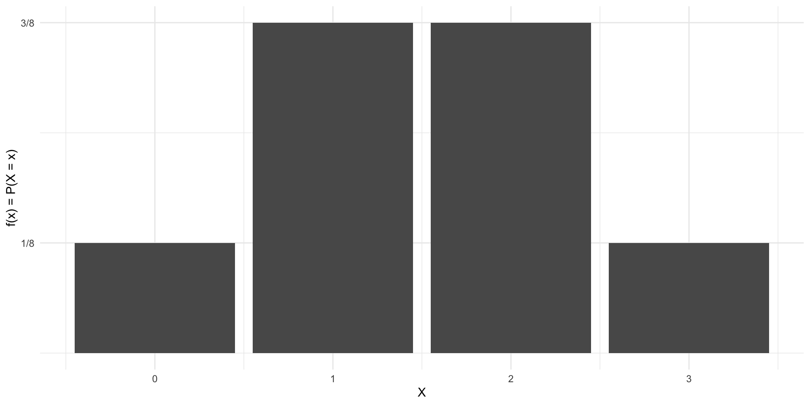
Probability and Distributions
SDS 320E
Basics of Probability
The Role of Probability
Reminder
Statistics can be described as the art of collecting, organizing, summarizing, and describing data as well as drawing inferences from the data.- Dr. Amy Maddox
- In statistics, we can never be certain whether our conclusion about our data is right or wrong
- Thus, we try to quantify the uncertainty about our decision using probability
Basics of Probability
- Probability is a measure of uncertainty
- Probability ranges from 0 to 1
- If \(P(A) = 1\), then the event \(A\) must always occur
\(A\) is referred to as a certain event
- If \(P(B) = 0\), then the event \(B\) must never occur
\(B\) is referred to as an impossible event
- If \(P(C)\) is “large” (closer to 1), then that implies that \(C\) is very likely to occur
- If \(P(C)\) is “small” (closer to 0), then that implies that \(C\) is very unlikely to occur
Basics of Probability Cont.
- Most people confuse probability with possibility
- Possibility is binary such that something either can or cannot occur
- Probability tells us how likely something is to happen, not just whether it can happen
Note: This is a video on probability vs possibility and not a comment on the existence of a God.
Set Theory
- The mathematical foundation of probability is established through set theory
- Experiment: a process in which the outcome cannot be determined in advance
- Ex: rolling a die, flipping a coin, pulling a card out of a deck
- Sample Space: set of all possible outcomes of an experiment
Example
Suppose our experiment is flipping a coin 2 times. We want to construct the sample space for the experiment.
Let \(h =\) heads and \(t =\) tails. Then, the sample space is given by
\(S =\) \(\{hh, tt, ht, th\}\)
Events
- Event: a subset of the sample space
Example
Suppose our experiment is flipping a coin 2 times. What is the probability we get two tails?
Let \(E\) be the event we get two tails.
The size of our sample space was \(4\) i.e there were 4 possible outcomes
There is only 1 way we can get two tails
Thus, \(P(E) = 1/4\)
Different Types of Events
- Equally Likely Events: events of a sample space that are equally likely to occur
- Ex: flipping a coin and getting a head or getting a tail \(P(Head) = 1/2\) and \(P(Tail) = 1/2\)
- Ex: flipping a coin and getting a head or getting a tail \(P(Head) = 1/2\) and \(P(Tail) = 1/2\)
- Mutually Exclusive Events: events that cannot occur at the same time
- Ex: When we flip a coin, we can only get a head or a tail, but not both
- Ex: When we flip a coin, we can only get a head or a tail, but not both
- Exhaustive Events: events that complete or exhaust the sample space
- Ex: Head and Tails are exhaustive because the represent all possible outcomes of flipping a coin
Probability Rules
In probability, we often use \(\cup\) to denote “or” and \(\cap\) to denote “and”
General Additivity Rule: \(P(A \cup B) = P(A) + P(B) - P(A \cap B)\)
- Note: If \(A\) and \(B\) are mutually exclusive, then \(P(A \cap B) = 0\) \[P(A \cup B) = P(A) + P(B)\]
Multiplication Rule: \(P(A \cap B) = P(A) \cdot P(B\mid A) = P(B) \cdot P(A\mid B)\)
Law of Total Probability: \(P(B) = \sum_{i} P(A_{i}) \cdot P(B \mid A_{i})\)
Bayes Theorem: \(P(A \mid B) = \frac{P(B \mid A) \cdot P(A)}{P(B)}\) \(= \frac{P(B \mid A) \cdot P(A)}{\sum_{i} P(A_{i}) \cdot P(B \mid A_{i})}\) by law of total probability
Random Variables
- Random Variable: A function that maps the sample space \(S\) onto a real numbers \[X(S) \to \mathbb{R}\]
- Generally, we denote random variables by \(X\), \(Y\), \(Z\), and ect.
Example
Consider flipping a coin 3 times. Let \(X =\) the numbers of heads. Define the random variable \(X\).
The sample space is given by
\(S = \{\) \(hhh, hht, hth, thh,\)
\(ttt, tth, tht, htt\}.\)
Thus, the random variable is \(X = \{0, 1, 2, 3\}.\)
Probability Distributions
Probability Distributions
- Probability distribution: describes ALL possible values that can be obtained by a random variable
- We denote the probability distribution by \(f(X)\)
- The probability distribution depends on the type of random variable we have i.e discrete or continuous
- If \(X\) is discrete, then the probability distribution is given by the probability mass function (PMF)
- If \(X\) is continuous, then the probability distribution is given by the probability density function (PDF)
Probability Mass Function
- Probability Mass Function (PMF): The PMF of a discrete random variable \(X\) is given by \[f_{X}(x) = P(X = x).\] I.e. the PMF specifies all possible values of the discrete random variable and their associate probabilities
Example
Consider flipping a coin 3 times. Let \(X =\) the numbers of heads. Find the PMF for \(X\).
We need the possible values of \(X\) and their probabilities.
| \(X\) | 0 | 1 | 2 | 3 |
|---|---|---|---|---|
| \(f(x)\) | 1/8 | 3/8 | 3/8 | 1/8 |
We will learn this a special distribution called “Binomial” and the PMF can also be represented by the formula \(f(x) = \binom{3}{x}\left(\frac{1}{2}\right)^{x}\left(\frac{1}{2}\right)^{3-x}\), \(x = 0, 1, 2, 3\)
Visualizing PMF
PMF Cont.
- We can find specific probabilities using a PMF
Example
Consider the PMF below.
| \(X\) | 0 | 1 | 2 | 3 | 4 | 5 |
|---|---|---|---|---|---|---|
| \(f(x)\) | 0.20 | 0.10 | 0.15 | 0.25 | 0.18 | 0.12 |
Find the following.
\(P( X \leq 1)\) \(= f(0) + f(1)\) \(= 0.20 + 0.10\) \(= 0.30\)
\(P(1 \leq X < 3)\) \(= f(1) + f(2) = 0.10 + 0.15 = 0.25\)
\(P(X = 7)\) \(= 0.\quad 7\) is not a possible value
Probability Density Function
Reminder
The probability distribution for discrete data is given by the PMF, which represents \(f_{X}(x) = P(X = x).\)
- The probability distribution for continuous data is given by the probability density function (PDF), which represents …
Issue
For continuous data, we generally do not have probability about a specific value. If \(X\) is continuous, then for a random value \(x\), \(P(X = x)\) \(\approx 0.\) reminder: there are \(\infty\) # of possible vlaues for continuous data
- Thus, the PDF does not represent probability for continuous data, rather it represents the “density” of observations i.e. frequency of occurrence
Visualizing PDF
- We have seen frequency for continuous data before …
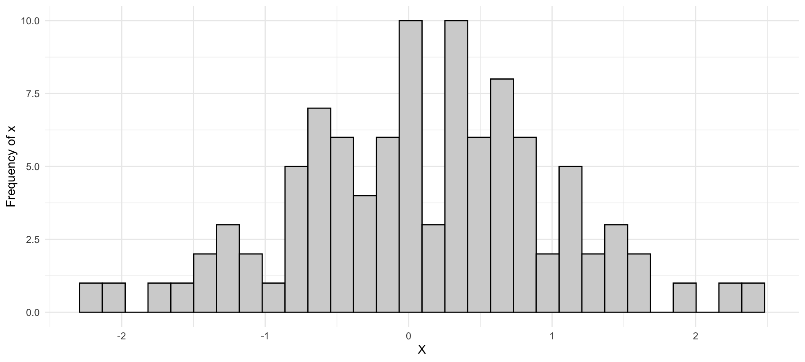
Visualizing PDF Cont.
- Rather than using frequency, we could use the “density”
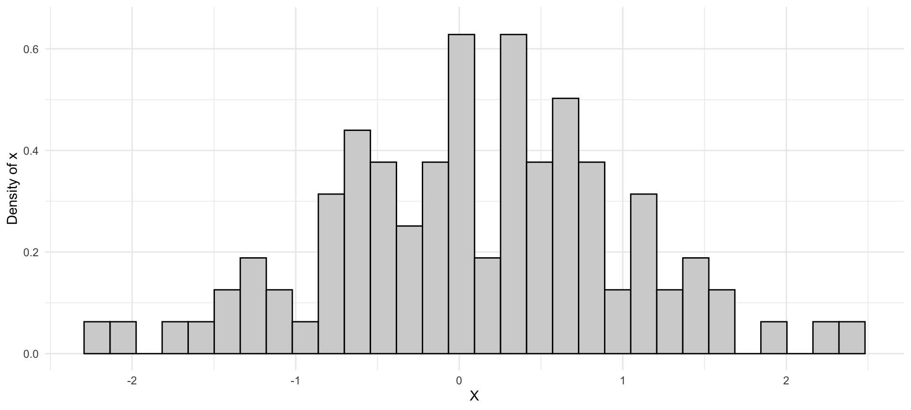
- Lastly, we could represent the histogram with a “smoothed out curve”
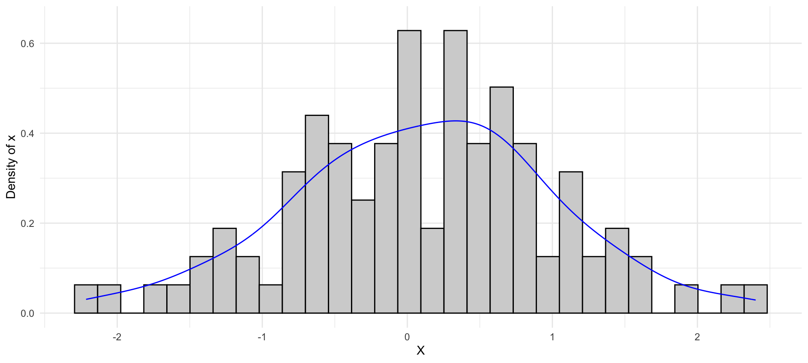
Visualizing PDF Cont.
- The probability density function, \(f(x)\), is the resulting “smoothed out curve”
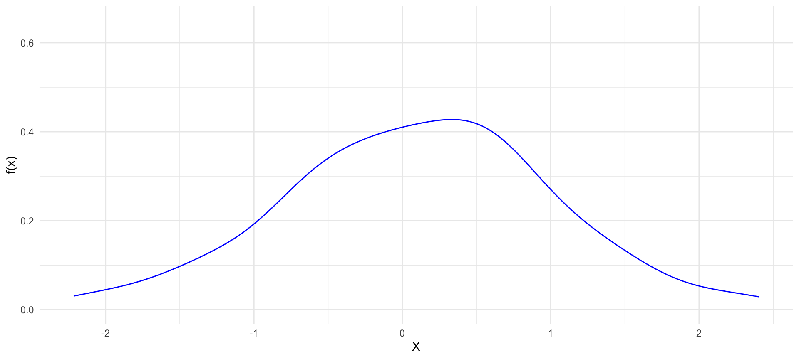
Probability with PDF
- To find \(P(a \leq X \leq b)\) with a PDF, we find the area under PDF curve from a to b
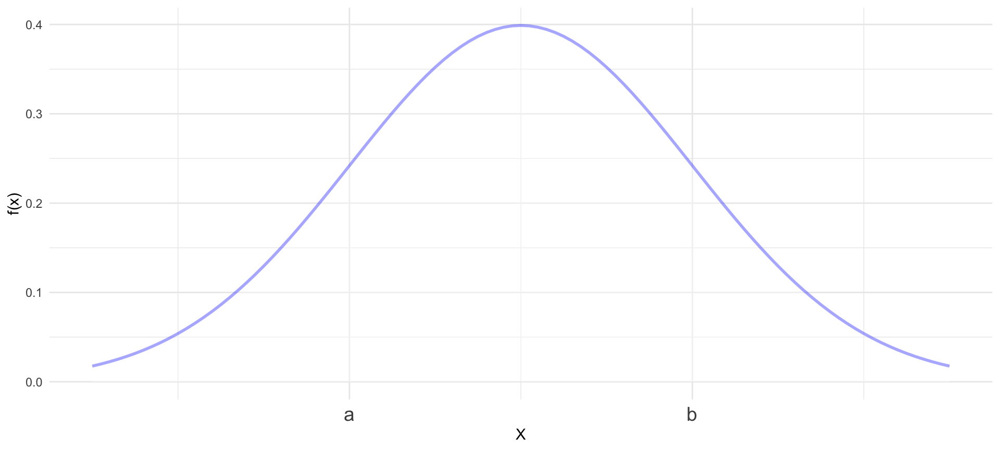
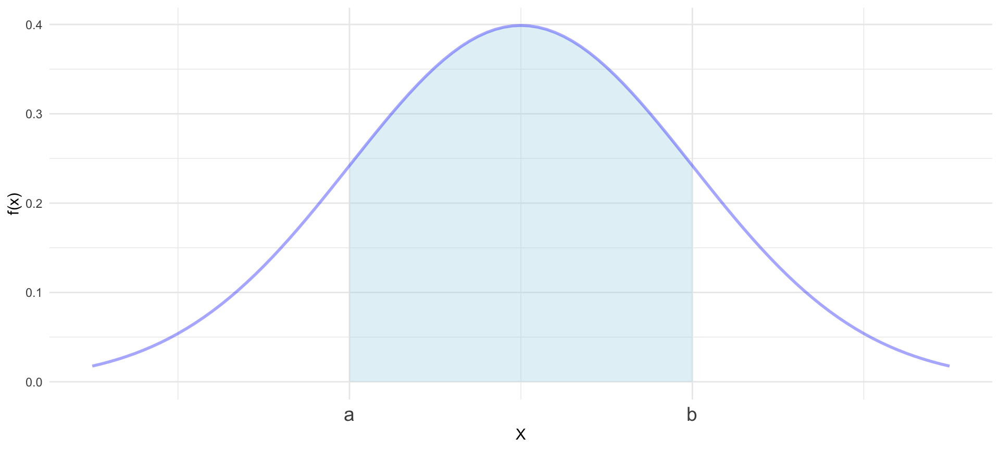
Probability with PDF Cont.
- When the shape of the \(f(x)\) is “geometrically pleasing”, finding area under the PDF curve is straight forward
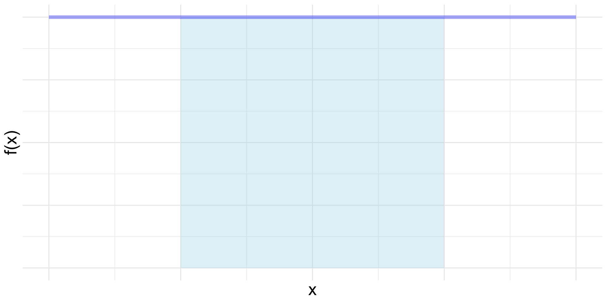
Area = bh
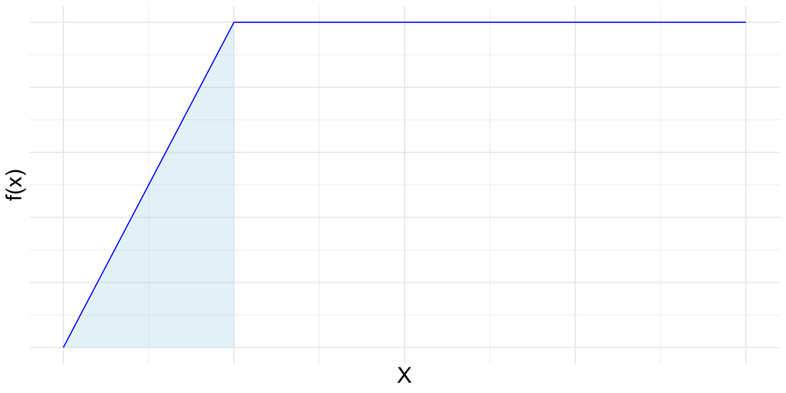
Area = 1/2bh
Probability with PDF Cont.
- For other PDFs, finding probability requires calculus \(\int_{a}^{b}f(x)dx\)
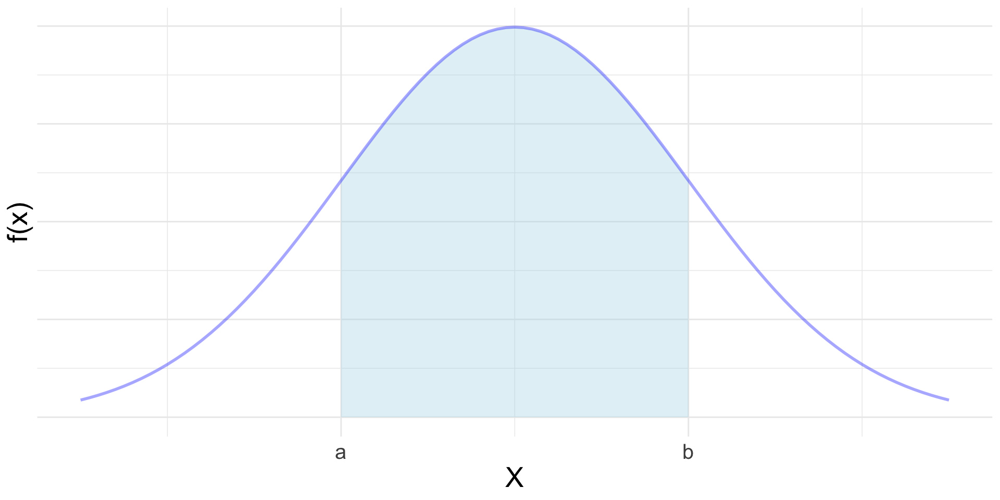
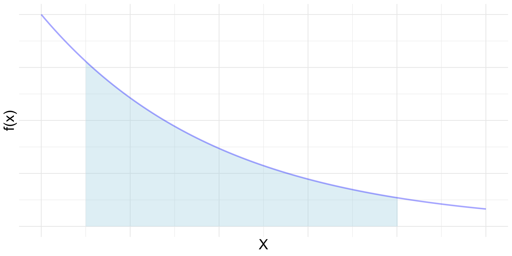
- This calculus is represented by the cumulative distribution function …
Cumulative Distribution Function
- Cumulative Distribution Function (CDF): the CDF of a random variable gives cumulative probability up to a specific value and is denoted by \[F_{X}(x) = P(X \leq x)\]
Example
Consider flipping a coin twice. We let \(X =\) the number of heads. We can easily show that the PMF of \(X\) is given by below.
| \(X\) | 0 | 1 | 2 |
|---|---|---|---|
| \(f(x)\) | 1/4 | 2/4 | 1/4 |
Find the CDF of \(X\).
| \(X\) | 0 | 1 | 2 |
|---|---|---|---|
| \(F(x)\) | 1/4 | 3/4 | 1 |
Visualizing CDF
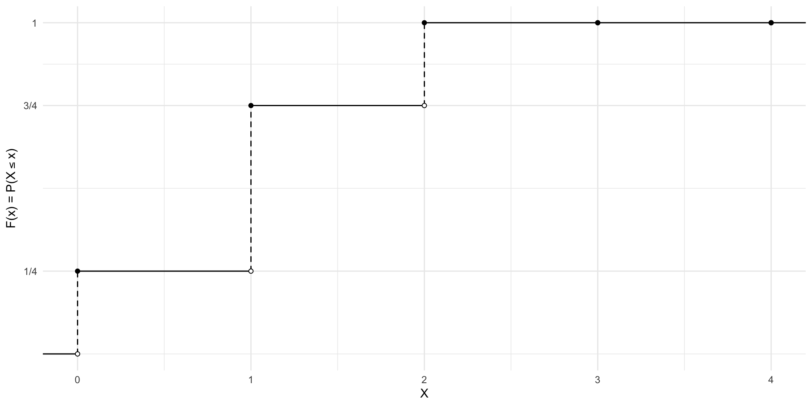
Probability with CDF
- We can find specific probabilities using a CDF. The use of the CDF will follow these general formulas
\(P\left(X\ \genfrac{}{}{0pt}{}{\leq}{<}\ a\right) =\) \(F(\quad)\)
\(P\left(X\ \genfrac{}{}{0pt}{}{\geq}{>}\ a\right) =\) \(1 - F(\quad)\)
\(P\left(a\ \genfrac{}{}{0pt}{}{\leq}{<}\ X\ \genfrac{}{}{0pt}{}{\leq}{<}\ b\right) =\) \(F(\quad) - F(\quad)\)
Warning
Note: The CDF evaluations, \(F(\quad)\), are intentionally left blank. You must determine the value to evaluate based on:
The type of data (discrete or continuous)
The possible values of the random variable
Probability with CDF Cont.
Example
Consider the CDF below.
| \(X\) | -1 | 2 | 3 | 5 | 6 | 7 |
|---|---|---|---|---|---|---|
| \(F(x)\) | 0.20 | 0.30 | 0.45 | 0.70 | 0.88 | 1 |
Find the following.
\(P(2 < X \leq 5)\) \(= F(5) - F(2) = 0.70 - 0.30 = 0.40\)
\(P(X \geq 2)\) \(= 1 - F(-1) = 1 - 0.20 = 0.80\)
\(P(2 \leq X < 5)\) \(= F(3) - F(-1) = 0.45 - 0.20 = 0.25\)
Probability with CDF Cont.
Example
Consider a continuous random variable \(X\).
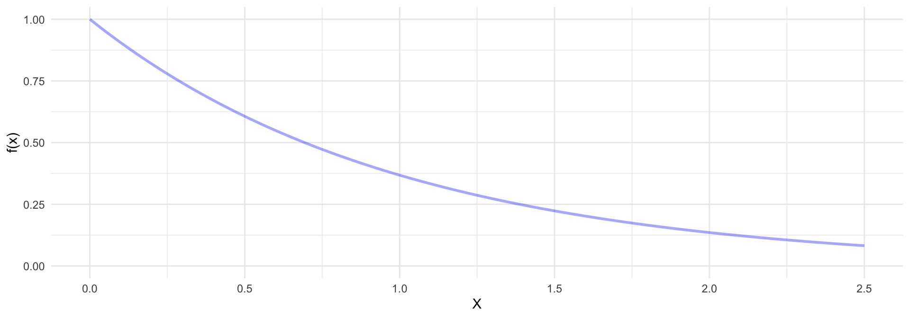
calculus \(\to\) \(F(x) = \begin{cases} 0 & x < 0 \\ 1 - e^{-x} & x \geq 0 \end{cases}\)
Find \(P(2 \leq X \leq 5)\).
\(= F(\) \(5\) \()\) - \(F(\) \(2\) \()\) note: since \(X\) is continuous, there is no mathematical difference between \(\leq\) or \(<\)
\(= 1 - e^{-5} - (1 - e^{-2})\)
\(= 0.1286\)
Visualizing Continuous CDF
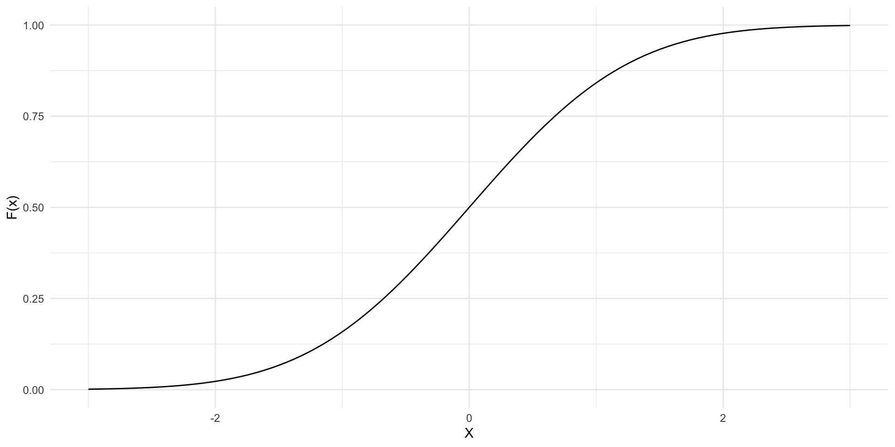
Special Distributions
Note
Certain “problems” or random variables will follow specific distributions that are well known and have closed form representations of their probability distributions.
| \(X\) | 0 | 1 | 2 | 3 |
|---|---|---|---|---|
| \(f(x)\) | 1/8 | 3/8 | 3/8 | 1/8 |
\(\longrightarrow\) \(f(x) = \binom{3}{x}\left(\frac{1}{2}\right)^{x}\left(\frac{1}{2}\right)^{3-x}\), \(x = 0, 1, 2, 3\)
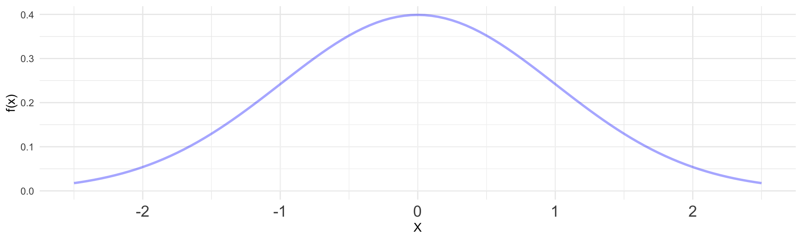
\(\longrightarrow\) \(f(x) = \frac{1}{\sqrt{2\pi\sigma^{2}}}e^{\frac{-(x - \mu)^{2}}{2\sigma^{2}}}\) , \(-\infty< X < \infty\)
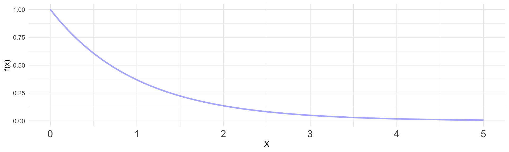
\(\longrightarrow\) \(f(x) = e^{-x}\) , \(0 \leq X < \infty\)
Binomial Distribution
Binomial Distribution Definition
Binomial Distribution
A discrete random variable \(X =\) the number of successes, with \(n\) trials and probability of success \(p\), is said to follow a binomial distribution, denoted
\(X \sim \text{Binomial}(n, p)\), note: \(\sim\) denotes “distributed”
if it satisfies the following:
- \(X =\) the number of successes
- There are only two outcomes, with constant probability of success p and probability of failure 1 - p
- There are a finite number of \(n\) independent trials
- Binomial Distribution Examples:
- Flipping coin 2 times and \(X =\) number of heads. Thus, \(X \sim \text{Bin}(n = 2, p = 0.5)\).
- Rolling die 4 times and \(X =\) number of 5s. Thus, \(X \sim \text{Bin}(n = 4, p = 1/6)\).
- Manufacturing process and \(X =\) number of defects and there is constant probability of defect occurring 5% of the time. Thus, \(X \sim Bin(n, p = 0.05)\).
Visualizing Binomial Distribution
- Adjust the number of trials (n) and probability of success (p) to see how the distribution changes.
function choose(n, k) {
k = Math.min(k, n - k);
let result = 1;
for (let i = 0; i < k; i++) result *= (n - i) / (i + 1);
return result;
}
function dbinom(k, n, p) {
return choose(n, k) * Math.pow(p, k) * Math.pow(1 - p, n - k);
}
data = Array.from({ length: n + 1 }, (_, k) => ({ k, prob: dbinom(k, n, p) }))
Plot.plot({
marks: [
Plot.barY(data, { x: "k", y: "prob", fill: "#BF5700" }),
Plot.ruleY([0])
],
marginLeft: 60,
x: { label: "Number of successes (x)" },
y: { label: "f(x) = P(X = x)", labelAnchor: "center", labelArrow: "none" },
subtitle: `Binomial(n = ${n}, p = ${p.toFixed(2)}) Distribution`
})PMF for Binomial
Binomial PMF
Let \(X \sim \text{Binomial}(n, p)\). Then, the probability mass function for \(X\) is given by \[ f_{X}(x) = \binom{n}{x}\left(p\right)^{x}\left(1 - p\right)^{n-x}\text{, for } x = 0, \ldots, n. \] note: \(\binom{n}{x} = \frac{n!}{x!(n-x)!}\)
- To get the PMF of binomial distribution in R, we can use the
dbinom()function. It has the following arguments:x: the number of successes to find the probability ofsize: the number of trials \(n\)prob: the constant probability of success \(p\)
CDF for Binomial
- The cumulative distribution function of a binomial random variable is represented by the sum of the PMF and is given by
\[F_{X}(x) = P(X \leq x) = \sum_{k = 0}^{x} \binom{n}{k}\left(p\right)^{k}\left(1 - p\right)^{n-k}\]
- To get the CDF of binomial distribution in R, we can use the
pbinom()function
Binomial Example
Example
Consider flipping a coin 20 times. Let \(X =\) the number of heads. Find the PMF of \(X\).
Before, we would first find the sample space …
\(S = \{hhhhhhhhhhhhhhhhhhhh, tttttttttttttttttt, httttttttttttttttt, \ldots\)
There are \(2^{20} =\) 1,048,576 possible outcomes in the sample space 😐
instead…
- We have a finite number of \(n = 20\) independent trials
- Only two outcomes with probability of “success” of \(p = 0.35\).
Therefore, \(X \sim Binomial(n = 20, p = 0.50),\) and the PMF is \[f(x) = \binom{20}{x}\left(0.50\right)^{x}\left(1 - 0.50\right)^{20-x}\text{, for } x = 0, \ldots, 20.\]
Binomial Example Cont.
Example
Consider flipping a coin 20 times. Let \(X =\) the number of heads. Find the following:
- P(X = 10)
\(X \sim Bin(20, 0.50)\). Thus,
\(P(X = 10) = \binom{20}{10}\left(0.50\right)^{10}\left(1 - 0.50\right)^{20-10} =\) 0.1762
- \(P(8 \leq X < 12)\) \(=F(11) - F(7)\)
Normal Distribution
Normal Distribution Definition
Normal Distribution
Suppose \(X\) is a continuous random variable with a mean \(\mu\) and standard deviation \(\sigma\). Further suppose that \(X\) is normally distributed, denoted as
\[X \sim N(\mu, \sigma).\]
Then, the probability density function (PDF) of \(X\) is given by \[f(x) = \frac{1}{\sqrt{2\pi\sigma^{2}}}e^{\frac{-(x - \mu)^{2}}{2\sigma^{2}}},\ \text{for } -\infty< X < \infty\]
- Normal Distribution Examples:
- A lot of data is “normally” distributed! Hence, the name “Normal” distribution the original name is gussian distribution
- Human height (within a sex)
- Weight
- Stock data
- Body temperature
- and many more …
- A lot of data is “normally” distributed! Hence, the name “Normal” distribution the original name is gussian distribution
Visualizing Normal Distribution
- Adjust the mean \(\mu\) and standard deviation \(\sigma\) to see how the normal distribution changes
function dnorm(x, mu, sigma) {
return (1 / (sigma * Math.sqrt(2 * Math.PI))) *
Math.exp(-0.5 * Math.pow((x - mu) / sigma, 2));
}
normXValues = d3.range(-30, 30, 0.2)
normData = normXValues.map(x => ({ x, density: dnorm(x, mu, sigma) }))
Plot.plot({
marks: [
Plot.line(normData, { x: "x", y: "density", stroke: "#BF5700", strokeWidth: 2 }),
Plot.ruleY([0])
],
marginLeft: 60,
x: { label: "x", domain: [-10, 10], labelAnchor: "center", labelArrow: "none" },
y: { label: "f(x)", domain: [0, 0.5], labelAnchor: "center", labelArrow: "none" },
subtitle: `Normal(μ = ${mu.toFixed(1)}, σ = ${sigma.toFixed(1)}) Distribution`
})Probability with Normal Distribution Issue
Reminder
To find probability with a Normal PDF curve, it requires calculus
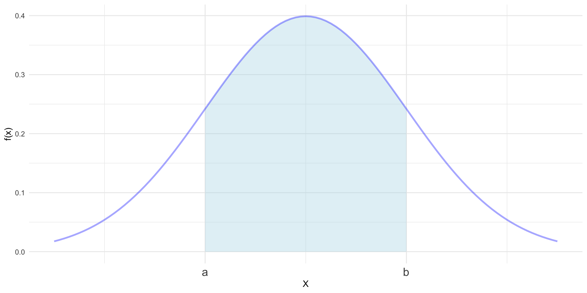
\(\longrightarrow\)
\(\quad \int_{a}^{b} \frac{1}{\sqrt{2\pi\sigma^{2}}}e^{\frac{-(x - \mu)^{2}}{2\sigma^{2}}} dx\)
not possible by hand!!
- To find probability for Normal distribution by hand, we will use the Standard Normal Distribution
Standard Normal Distribution
Standard Normal Distribution
The Standard Normal distribution is a special case of the Normal distribution with mean \(\mu = 0\) and \(\sigma = 1\) and is denoted by \(Z \sim N(0, 1).\)
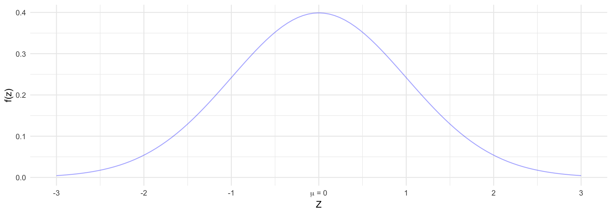
- The cumulative distribution function (CDF) of \(Z\) has been evaluated and written in tables: Z-Table link
Standardizing Normal Distribution
Z-Score
Each Normal distribution can be standardized using the formula
\(z = \frac{X - \mu}{\sigma}\) \(= \frac{data - mean}{std\ dev.}\)
\(z\) is referred to as the z-score.
- The z-score represents how many standard deviations the value \(X\) is above or below the mean
Example
Suppose \(X \sim N(20, 5)\). Find the z-score for the following.
- \(X = 25\) z = 1 i.e. 1 stand dev. above mean
- \(X = 10\) z = -2 i.e. 2 stand dev. below mean
Probability with Normal Distribution by Hand
Example
Let \(X =\) Exam 1 scores for previous SDS 320E Semesters, and it is known the the scores are normally distributed with a mean of 85 and standard deviation of 5. Find the following.
- \(P(75 \leq X <90)\)

\(\begin{align*} &= P(\frac{75 - 85}{5} \leq Z < \frac{90 - 85}{5}) \\ &= P(-2 \leq Z < 1) \\ &= F_{Z}(1) - F_{Z}(-2) \\ &= 0.8185 \end{align*}\)
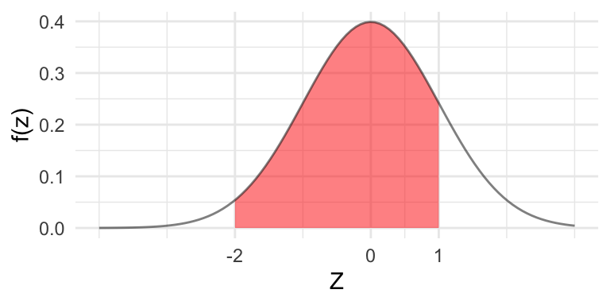
- The Median Score was an 89.5. What is the Probability a random student scored higher than the Median?
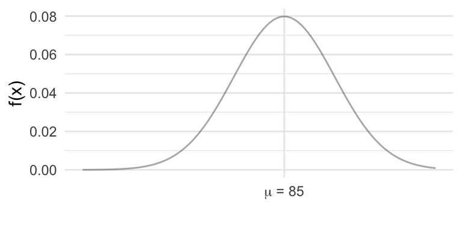
\(\begin{align*} P(X > 89.5)&= P(Z > \frac{89.5 - 85}{5}) \\ &= P(Z > 0.9) \\ &= 1 - F_{Z}(0.9) \\ &= 1 -0.8159 \\ &= 0.1841 \end{align*}\)
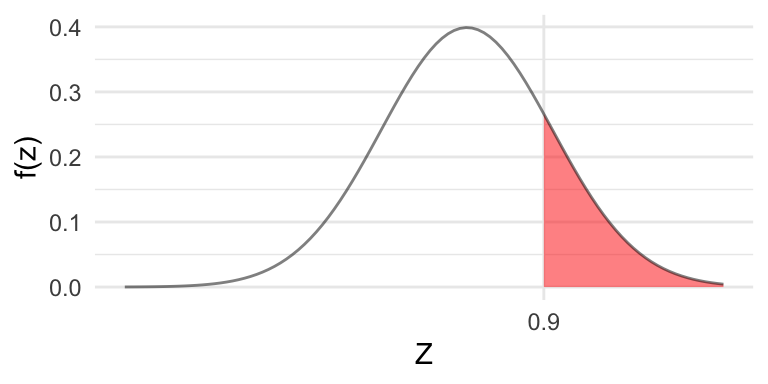
Quantiles with Normal Distribution
Example
Let \(X =\) Exam 1 scores for previous SDS 320E Semesters, and it is known the the scores are normally distributed with a mean of 85 and standard deviation of 5.
Suppose a student scored in the 97.5th percentile. What score did they get?

The Z-score corresponding to the 97.5th percentile is 1.96.
Thus, \[1.96 = \frac{X - 85}{5}.\] Solving for \(X\), we get the score for the 97.5th percentile is \(94.8\).
Normal Distribution in R
- To get the CDF of a normal distribution in R, we can use the
pnorm()function. It has the following arguments:q: the numerical value to evaluatemean: the mean \(\mu\)sd: the standard deviation \(\sigma\)lower.tail: logical; if TRUE (default), probabilities are \(P(X \leq x)\), otherwise, \(P(X > x)\).
- We can also get quantiles using the
qnorm()function
Sampling Distribution and CLT
Statistic Review
Reminder
A Statistic is a measure of the sample.
svPopSize = 500
svPopRadius = 110
svSampleRadius = 55
svPopulation = {
const values = d3.range(svPopSize).map(() => d3.randomNormal(50, 10)());
return values.map((v, i) => {
const r = svPopRadius * Math.sqrt(Math.random());
const theta = Math.random() * 2 * Math.PI;
return { id: i, value: v, x: r * Math.cos(theta), y: r * Math.sin(theta) };
});
}
svSample = {
svRedraw;
const idx = d3.shuffle(d3.range(svPopulation.length)).slice(0, svSampleSize);
return idx.map(i => svPopulation[i]).map(d => {
const r = svSampleRadius * Math.sqrt(Math.random());
const theta = Math.random() * 2 * Math.PI;
return { ...d, sx: r * Math.cos(theta), sy: r * Math.sin(theta) };
});
}
svSampledIds = new Set(svSample.map(d => d.id))
svXbar = d3.mean(svSample, d => d.value)
svXbarVisible = Generators.observe(notify => {
notify(false);
let visible = false;
const toggle = () => {
visible = !visible;
notify(visible);
};
viewof svShowXbar.addEventListener("click", toggle);
return () => viewof svShowXbar.removeEventListener("click", toggle);
})
svPopulationViz = {
const size = svPopRadius * 2 + 20;
const c = size / 2;
const dots = svPopulation.map(d => {
const hi = svSampledIds.has(d.id);
return `<circle cx="${(c + d.x).toFixed(1)}" cy="${(c + d.y).toFixed(1)}" r="3.5" fill="${hi ? "#BF5700" : "#9CA3AF"}" opacity="${hi ? 1 : 0.55}"></circle>`;
}).join("");
const div = document.createElement("div");
div.innerHTML = `<svg width="${size}" height="${size}" viewBox="0 0 ${size} ${size}">
<circle cx="${c}" cy="${c}" r="${svPopRadius}" fill="none" stroke="#333" stroke-width="1.5"></circle>
${dots}
</svg>`;
return div;
}
svSampleViz = {
const size = svSampleRadius * 2 + 20;
const c = size / 2;
const dots = svSample.map(d =>
`<circle cx="${(c + d.sx).toFixed(1)}" cy="${(c + d.sy).toFixed(1)}" r="4" fill="#BF5700"></circle>`
).join("");
const div = document.createElement("div");
div.innerHTML = `<svg width="${size}" height="${size}" viewBox="0 0 ${size} ${size}">
<circle cx="${c}" cy="${c}" r="${svSampleRadius}" fill="none" stroke="#333" stroke-width="1.5"></circle>
${dots}
</svg>`;
return div;
}
svSampleTable = Inputs.table(
svSample.map((d, i) => ({ obs: i + 1, value: +d.value.toFixed(2) })),
{ columns: ["obs", "value"], layout: "auto" }
)
{
const container = document.createElement("div");
container.style.display = "flex";
container.style.alignItems = "center";
container.style.gap = "2em";
container.style.flexWrap = "nowrap";
const popWrap = document.createElement("div");
popWrap.style.textAlign = "center";
const popLabel = document.createElement("div");
popLabel.style.fontWeight = "600";
popLabel.style.marginBottom = "0.5em";
popLabel.textContent = "Population";
popWrap.append(popLabel, svPopulationViz);
const sampWrap = document.createElement("div");
sampWrap.style.textAlign = "center";
const sampLabel = document.createElement("div");
sampLabel.style.fontWeight = "600";
sampLabel.style.marginBottom = "0.5em";
sampLabel.textContent = "Sample";
sampWrap.append(sampLabel, svSampleViz);
const tableStatsWrap = document.createElement("div");
tableStatsWrap.style.display = "flex";
tableStatsWrap.style.flexDirection = "column";
tableStatsWrap.style.alignItems = "center";
tableStatsWrap.style.gap = "0.75em";
const tableWrap = document.createElement("div");
tableWrap.style.maxHeight = "300px";
tableWrap.style.overflowY = "auto";
tableWrap.appendChild(svSampleTable);
const statsWrap = document.createElement("div");
statsWrap.style.fontSize = "1.6em";
statsWrap.style.minHeight = "1.2em";
statsWrap.innerHTML = svXbarVisible
? `<strong>x̄</strong> = ${svXbar.toFixed(3)}`
: "";
tableStatsWrap.append(tableWrap, statsWrap);
container.append(popWrap, sampWrap, tableStatsWrap);
return container;
}- Thus, each time we take a sample, the statistic will vary
Sampling Distribution
- Since a statistic will vary, it will have a probability distribution
viewof sdStatistic = Inputs.select(["Mean", "Median", "Standard Deviation"], { value: "Mean", label: "Statistic" })
viewof sdSampleSize = Inputs.range([2, 50], { value: 10, step: 1, label: "Sample size (n)" })
viewof sdDrawOne = Inputs.button("Draw Sample")
viewof sdNumSamples = Inputs.range([10, 1000], { value: 100, step: 10, label: "Number of samples" })
viewof sdDrawMany = Inputs.button("Draw Many Samples")sdSampleRadius = 55
sdPopMean = 50
sdPopSD = 10
sdHistRange = 30
sdSymbols = ({
"Mean": "x̄",
"Median": "x̃",
"Standard Deviation": "s"
})
sdDomains = ({
"Mean": [sdPopMean - sdHistRange, sdPopMean + sdHistRange],
"Median": [sdPopMean - sdHistRange, sdPopMean + sdHistRange],
"Standard Deviation": [0, sdPopSD * 2]
})
function sdDrawSample(n) {
return d3.range(n).map(() => d3.randomNormal(sdPopMean, sdPopSD)());
}
function sdComputeStat(sample) {
if (sdStatistic === "Mean") return d3.mean(sample);
if (sdStatistic === "Median") return d3.median(sample);
return d3.deviation(sample);
}
sdState = Generators.observe(notify => {
sdSampleSize;
sdStatistic;
let current = sdDrawSample(sdSampleSize);
let history = [sdComputeStat(current)];
notify({ current, statValue: sdComputeStat(current), history });
const handleDrawOne = () => {
current = sdDrawSample(sdSampleSize);
const statValue = sdComputeStat(current);
history = [...history, statValue];
notify({ current, statValue, history });
};
const handleDrawMany = () => {
const newStats = d3.range(sdNumSamples).map(() => sdComputeStat(sdDrawSample(sdSampleSize)));
history = [...history, ...newStats];
notify({ current, statValue: sdComputeStat(current), history });
};
viewof sdDrawOne.addEventListener("click", handleDrawOne);
viewof sdDrawMany.addEventListener("click", handleDrawMany);
return () => {
viewof sdDrawOne.removeEventListener("click", handleDrawOne);
viewof sdDrawMany.removeEventListener("click", handleDrawMany);
};
})
sdSampleViz = {
const size = sdSampleRadius * 2 + 20;
const c = size / 2;
const dots = sdState.current.map(() => {
const r = sdSampleRadius * Math.sqrt(Math.random());
const theta = Math.random() * 2 * Math.PI;
const x = c + r * Math.cos(theta);
const y = c + r * Math.sin(theta);
return `<circle cx="${x.toFixed(1)}" cy="${y.toFixed(1)}" r="4" fill="#BF5700"></circle>`;
}).join("");
const div = document.createElement("div");
div.innerHTML = `<svg width="${size}" height="${size}" viewBox="0 0 ${size} ${size}">
<circle cx="${c}" cy="${c}" r="${sdSampleRadius}" fill="none" stroke="#333" stroke-width="1.5"></circle>
${dots}
</svg>`;
return div;
}
sdHistogram = Plot.plot({
width: 520,
height: 380,
marginLeft: 60,
marks: [
Plot.rectY(sdState.history, Plot.binX({ y: "count" }, { x: d => d, fill: "#BF5700" })),
Plot.ruleY([0])
],
x: { label: sdSymbols[sdStatistic], domain: sdDomains[sdStatistic] },
y: { label: "count", labelAnchor: "center", labelArrow: "none" },
subtitle: `Distribution of ${sdSymbols[sdStatistic]} (n = ${sdSampleSize}, ${sdState.history.length} samples drawn)`
})
{
const container = document.createElement("div");
container.style.display = "flex";
container.style.alignItems = "center";
container.style.gap = "2em";
container.style.flexWrap = "nowrap";
const sampWrap = document.createElement("div");
sampWrap.style.textAlign = "center";
const sampLabel = document.createElement("div");
sampLabel.style.fontWeight = "600";
sampLabel.style.marginBottom = "0.5em";
sampLabel.textContent = "Sample";
const statLabel = document.createElement("div");
statLabel.style.fontSize = "1.4em";
statLabel.style.marginTop = "0.5em";
statLabel.innerHTML = `<strong>${sdSymbols[sdStatistic]}</strong> = ${sdState.statValue.toFixed(3)}`;
sampWrap.append(sampLabel, sdSampleViz, statLabel);
container.append(sampWrap, sdHistogram);
return container;
}- The probability distribution of a statistic is referred to as the sampling distribution
Distribution of \(\overline{X}\) when X is Normal
Example
Suppose \(X \sim N(\mu, \sigma).\) What is the distribution of \(\bar{X}\)?
xdnNumSamples = 1000
xdnDomain = [-10, 10]
xdnXbars = d3.range(xdnNumSamples).map(() => {
const sample = d3.range(xdnN).map(() => d3.randomNormal(xdnMu, xdnSigma)());
return d3.mean(sample);
})
xdnMeanXbar = d3.mean(xdnXbars)
xdnSDXbar = d3.deviation(xdnXbars)
xdnHistogram = Plot.plot({
width: 480,
height: 200,
marginLeft: 55,
marginTop: 25,
style: { fontSize: "12px" },
marks: [
Plot.rectY(xdnXbars, Plot.binX({ y: "count" }, { x: d => d, fill: "#BF5700" })),
Plot.ruleY([0])
],
x: { label: "x̄", domain: xdnDomain },
y: { label: "count", labelAnchor: "center", labelArrow: "none" },
subtitle: `μ = ${xdnMu.toFixed(1)}, σ = ${xdnSigma.toFixed(1)}, n = ${xdnN}, 1000 samples`
})
{
const container = document.createElement("div");
container.style.display = "flex";
container.style.flexDirection = "column";
container.style.alignItems = "center";
container.style.gap = "0.5em";
const statsRow = document.createElement("div");
statsRow.style.display = "flex";
statsRow.style.gap = "3em";
statsRow.style.fontSize = "1.2em";
statsRow.innerHTML = `
<div><strong>Mean of x̄</strong> = ${xdnMeanXbar.toFixed(3)}</div>
<div><strong>SD of x̄</strong> = ${xdnSDXbar.toFixed(3)}</div>
`;
container.append(xdnHistogram, statsRow);
return container;
}- \(\bar{X}\) looks normally distributed!
- It has the same mean as \(\mu\)
- But a slight different standard deviation?
Distribution of \(\overline{X}\) when X is Normal Cont.
Theorem
Suppose \(X\) is normally distributed with mean \(\mu\) and standard deviation \(\sigma\), i.e \(X \sim N(\mu, \sigma)\). Then, the sampling distribution of \(\bar{X}\) is
\[\bar{X} \sim N(\mu, \sigma/\sqrt{n})\]
- Note: This result holds true regardless of the sample size! Sample size will matter for CLT
- Since we know the distribution of \(\bar{X}\), we can do the following:
- Find probability about \(\bar{X}\)
- Make inference about \(\bar{X}\)
Probability of \(\overline{X}\) when X is Normal
Example
Coca-Cola cans are labeled as 12 oz. However, the 12 oz is not an exact amount in every single can. It may vary slightly from can to can. Suppose the fill amount of Coca-Cola cans is normally distributed with mean of 12 oz and standard deviation of 0.5 oz. Find the following.
- What is the distribution of \(X =\) the fill amount of Coca-Cola cans?
\(X \sim N(\mu = 12, \sigma = 0.5)\)
- Suppose we take a sample of 10 Coca-Cola cans, what is the distribution of the mean fill amount?
\(\bar{X} \sim N(12, 0.5/\sqrt{10})\)
- What is the probability the average fill amount for a sample of 10 is less than 11.8oz?
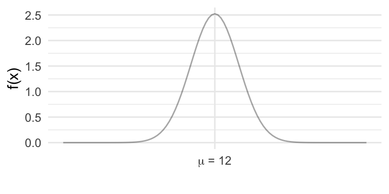
\(\begin{align*} P(\bar{X} < 11.8) &= P(Z < \frac{11.8 - 12}{0.50/\sqrt{10}}) \\ &= P(Z < -1.26) \\ &= 0.1038 \end{align*}\)
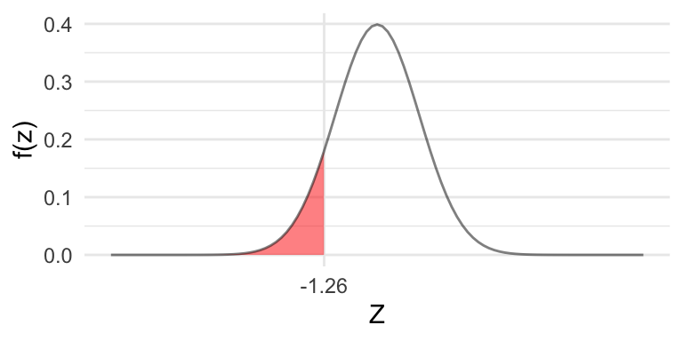
Central Limit Theorem
- What is the distribution of \(\bar{X}\), if \(X\) is not normal?
cltNumSamples = 1000
cltSampleFn = ({
"Uniform": d3.randomUniform(0, 1),
"Exponential": d3.randomExponential(1),
"Beta": d3.randomBeta(2, 2)
})
cltDomains = ({
"Uniform": [0, 1],
"Exponential": [0, 4],
"Beta": [0, 1]
})
cltXbars = {
const gen = cltSampleFn[cltDist];
return d3.range(cltNumSamples).map(() => {
const sample = d3.range(cltN).map(() => gen());
return d3.mean(sample);
});
}
cltHistogram = Plot.plot({
width: 640,
height: 380,
marginLeft: 60,
marginTop: 30,
style: { fontSize: "13px" },
marks: [
Plot.rectY(cltXbars, Plot.binX({ y: "count" }, { x: d => d, fill: "#BF5700" })),
Plot.ruleY([0])
],
x: { label: "x̄", domain: cltDomains[cltDist] },
y: { label: "count", labelAnchor: "center", labelArrow: "none" },
subtitle: `Distribution of x̄ for ${cltDist}, n = ${cltN}, 1000 samples`
})Central Limit Theorem Cont.
Central Limit Theorem (CLT)
Suppose \(X\) is distributed with mean \(\mu\) and standard deviation \(\sigma\). Then, for a “sufficiently large” sample size \(n\), the sampling distribution of \(\bar{X}\) is
\[\bar{X} \stackrel{\cdot}{\sim} N(\mu, \sigma/\sqrt{n}).\] note: \(\stackrel{\cdot}{\sim}\) means approximately distributed
- “Sufficiently large” sample size will depend on the underlying distribution i.e. more skewed data will need larger \(n\) to be sufficient
- A crude rule for sufficiently large is if \(n > 30\)
- The CLT is one of the most important/popular theorems in statistics
- It allows us to make inference about a mean with very little information
Probability for CLT
Example
Medical labs periodically check that their testing equipment is reading accurately by running a control solution with a known, certified concentration. Suppose this control solution has a glucose concentration with a mean of 100 mg/dL and a standard deviation of 10 mg/dL. Find the following
- What is the distribution of \(X =\) glucose concentration?
We don’t know! We only know that \(\mu = 100\) and \(\sigma = 10\).
- Suppose a lab want to check 49 of their testing equipment. What is the distribution of the average glucose concentration for a sample of 49?
\(\bar{X} \stackrel{\cdot}{\sim} N(100, 10/\sqrt{49})\)
- What is the probability that for a sample of 49 testing equipment, the average glucose concentration is greater than or equal to 102?
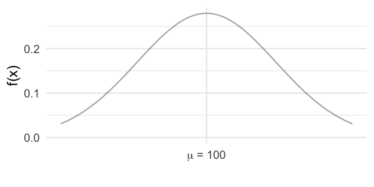
\(\begin{align*} P(\bar{X} \ge 102) &= P(Z \ge \frac{102 - 100}{10/\sqrt{49}}) \\ &= P(Z \ge 1.4) \\ &= 1 - 0.9192 = 0.0808 \end{align*}\)
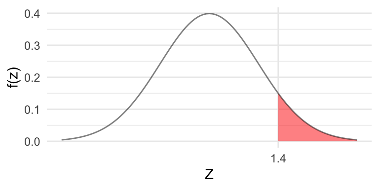
The End

Derik Boonstra, Ph.D.